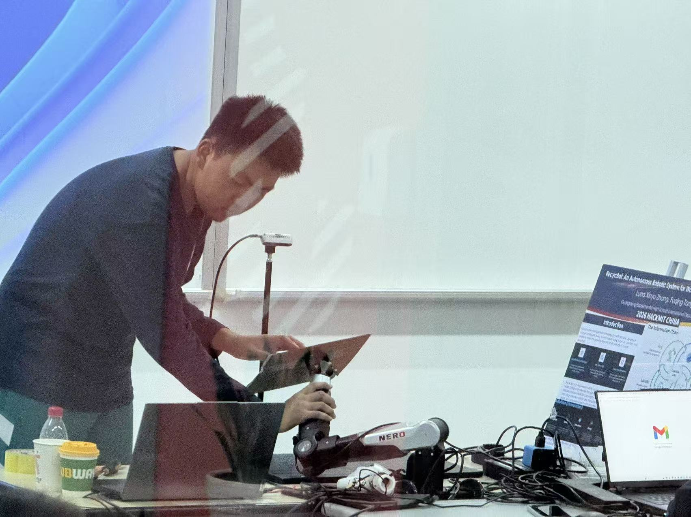

End-effector tracking before grasp
This clip isolates the tracking behavior and makes the arm-control stage easier to review.
This demo shows the robot performing detection, target following, grasping, and categorized placement.
These videos capture live detection, arm alignment, dexterous grasping, and final release into the correct category.
Both bottles and cups appear in the full workflow videos, matching the current scope of the prototype.
The arm moves against measured 3D target positions rather than only 2D image-space detections.
The follow stage keeps the end effector positioned over the target before grasp execution begins.
The manipulation sequence closes with a grip, transfer, and categorized placement.
The main demo now stands on its own in a full-width column so the motion reads cleanly: detect the object, align the arm, grasp with the dexterous hand, then release into the target category.
The featured clip shows the bottle sequence end to end, from recognition to placement.
The second clip confirms the same control pipeline can generalize across the two supported classes.
Supporting clips and stills highlight the follow stage, the detection interface, hardware integration, and the physical setup around the robot.
This clip isolates the tracking behavior and makes the arm-control stage easier to review.
This clip shows the visual front end directly, including labels, overlays, and the target used for robot alignment.
This hardware snapshot shows the integration work behind the grasp sequence seen in the main videos.

This workspace image ties the demo results back to the calibrated setup that makes physical targeting possible.

A featured run captures the full detect-follow-grasp-place cycle in a single sequence.
Annotated frames separate perception, localization, and manipulation evidence for clear review.
Summarize what is already validated now: bottle/cup recognition, coordinate alignment, dynamic following, and categorized placement.
The project deck and supporting documents provide additional technical background for the prototype.
The repository contains the implementation details behind the demo pipeline.